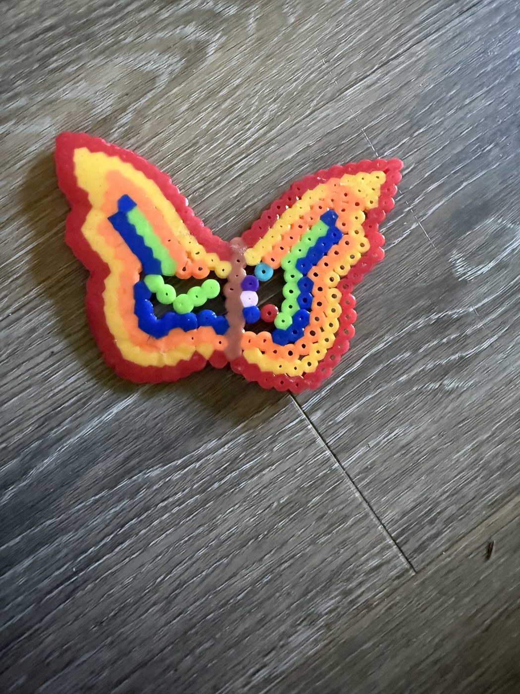
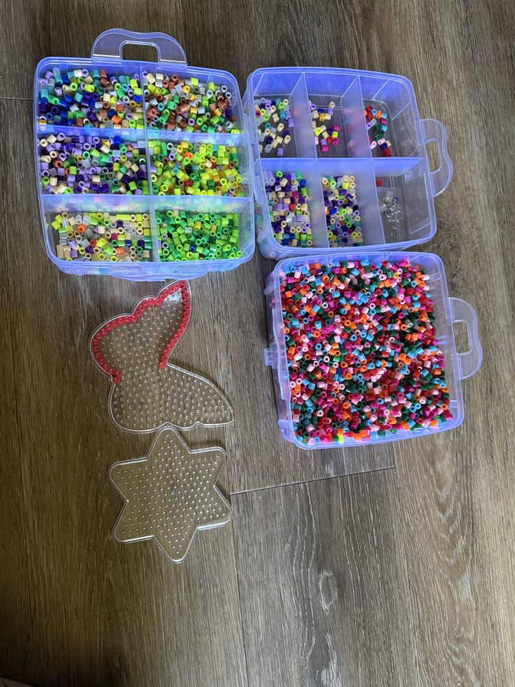
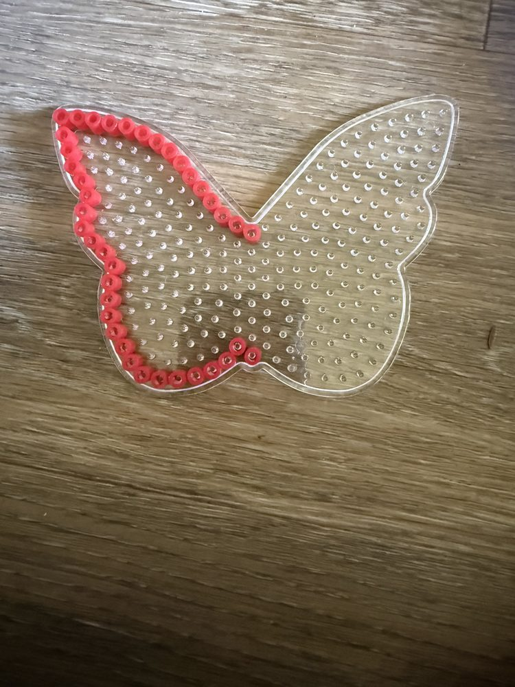
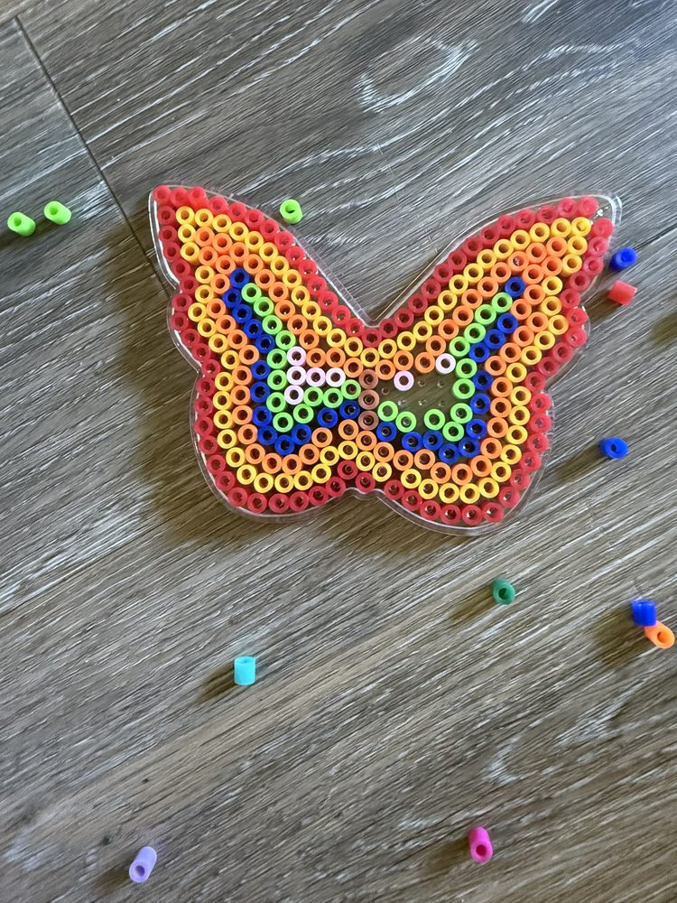
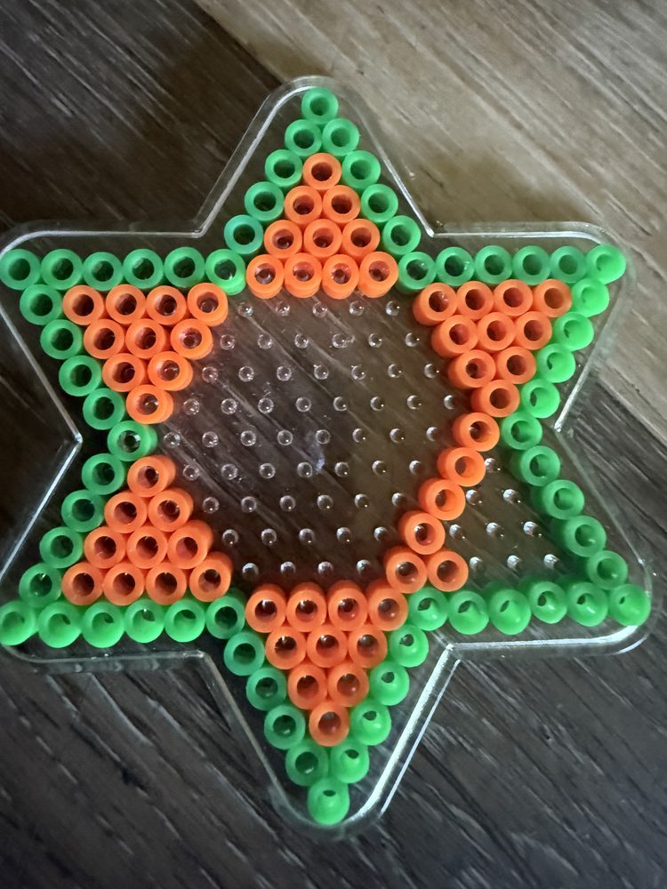
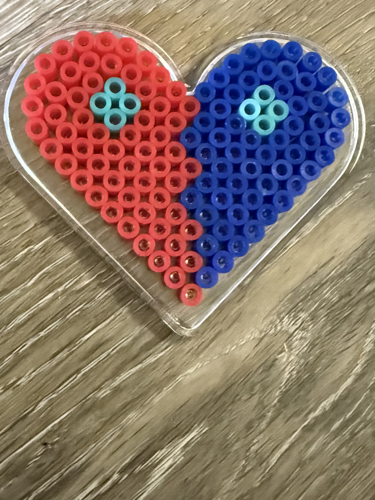

Make something at home this summer

Make something beautiful at home with these easy, low-cost crafts.

Gather your supplies

Place beads on the pegboard

Fill in your design
Iron it (adult only)
Cool & enjoy!
Rainbow Butterfly

Colorful Star

Sweet Heart
Volcano eruptions, color mixing, crystal-growing experiments. Turn your kitchen into a lab with stuff you already have.
Hunt for leaves, rocks, bugs, and treasures in your yard. Sort them, press them in a book, or make a nature collage.